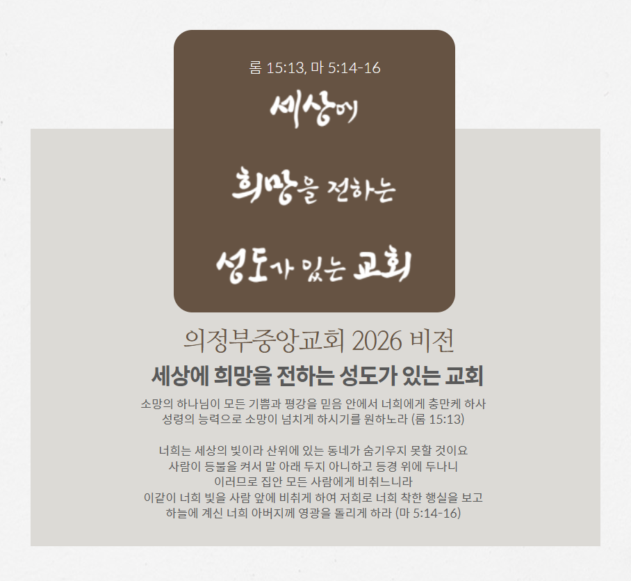

100%
👉 화면을 확대하신 후 마우스로 끌거나 손가락으로 드래그하여 숨겨진 부분을 구석구석 보실 수 있습니다.
샬롬,

주보 데이터를 로딩 중입니다...
"여호와는 나의 목자시니 내게 부족함이 없으리로다"
시편 23:1우리의 인생 여정 속에서 부족함을 느낄 때가 많습니다. 그러나 전능하시고 자비로우신 여호와께서...
사랑의 주님, 나의 삶을 친히 인도해 주시고 보호해 주시는 목자가 되어 주시니 감사합니다...
"여호와는 나의 목자시니 내게 부족함이 없으리로다" (시편 23:1)
아래 빈 칸에 마우스나 손가락으로 오늘의 한 구절이나 마음의 구절을 정성스레 따라 쓰거나 가훈처럼 멋진 필사를 완성해 보세요.
마우스나 터치펜 사용이 불편하시다면, 아래 빈 칸에 위의 말씀을 차분한 마음으로 정성껏 타이핑해 보세요.